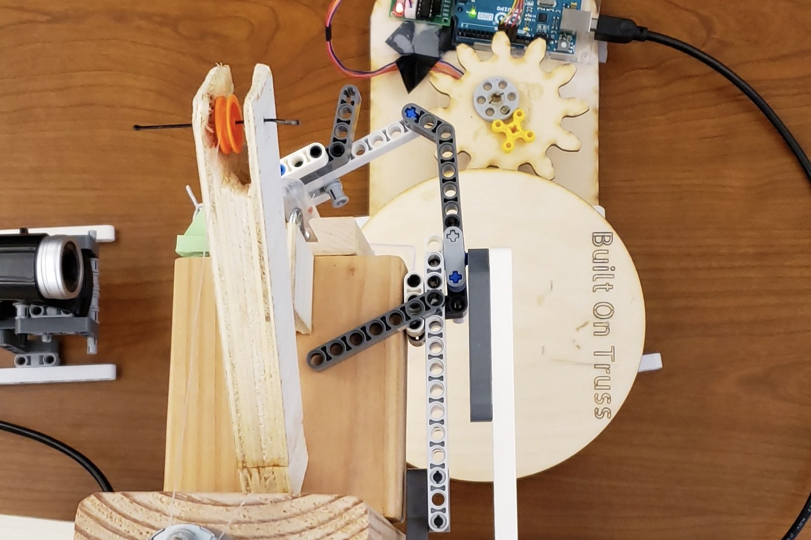

I design and deploy automation and precision hardware for manufacturing — from a Fanuc robotic inspection cell at Tesla to actuator fixtures and EOL yield work at Figure AI. I turn manual, variable processes into repeatable, instrumented systems.

I'm a mechanical engineer finishing my B.S. at the University of Kentucky, with a computer science minor and a graduate start in Applied AI at the University of San Diego. My work lives where mechanical design meets manufacturing: fixtures, robotic cells, tolerance and quality systems, and the data infrastructure that keeps them honest.
Across roles at Figure AI, Tesla, Amazon Robotics, Schneider Electric, Seagate, and GE Appliances, I've shipped automation and process improvements measured in real dollars, cycle time, and yield. I care about precision hardware and building things that hold up on a production floor.
Things I designed and built with my own hands — distinct from the company work above. Click a card for the full write-up.
Gear-driven, stepper-controlled turntable that indexes sample cups under a pipette. My subsystem in a 4-person build.
View project →Component design, material selection, and validation for the UKY competition solar vehicle.
View project →Open to mechanical and manufacturing engineering roles. The fastest way to reach me is email or LinkedIn.